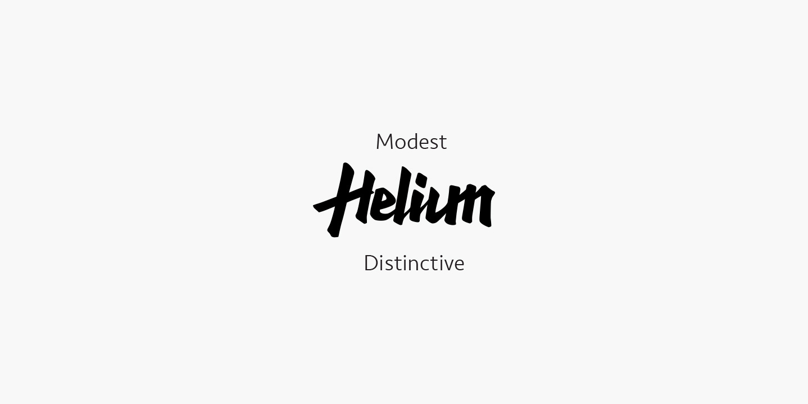
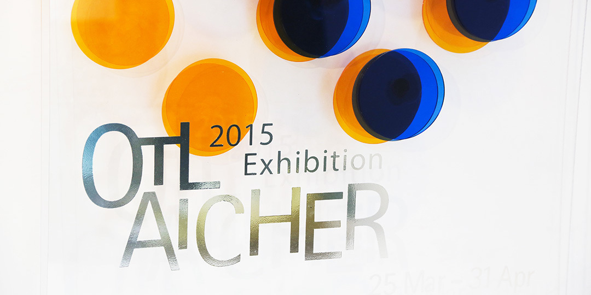
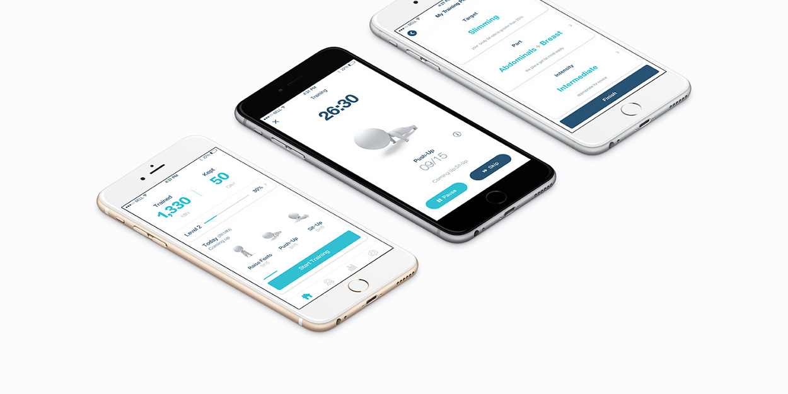

photography
Side Effects
Shanghai is an international metropolis that represents the highest level of urban development in China. Walking in its midst, I cannot help but look up and marvel at the city around me. Undoubtedly, urbanization brings a lot of convenience, and I am one of the beneficiaries. However, having lived in Shanghai for several years and gotten a deep understanding of this city, I start to realize that urbanization also brings side effects.

graphic design
Helium
I often see some teenagers oddly dressed to show their personality. In fact, it is likely that they just blindly follow trend and don't have a deep understanding of their own heart. However, those people who do things in a low-key way-unsocial, not used to be interested in relations with others, deeply know themselves and insist to be themselves. Thus,low key is not without personality but a kind of character.

graphic design
Otl Aicher 2015 Exhibition
OTL AICHER 2015 EXHIBITION IDENTITY is a virtual design project to salute Otl Aicher, who was the master of Modernism graphic design.
Otl Aicher 2015 exhibition fully shows Otl aicher’s design works of his whole life, including overall visual identity of the 1872 Munich Olympics ,Rotis font family, Lufthansa visual identity design, etc. The audience will notice Aicher’s great capability of arragement and plan by visiting the exhibition.
Otl Aicher 2015 exhibition fully shows Otl aicher’s design works of his whole life, including overall visual identity of the 1872 Munich Olympics ,Rotis font family, Lufthansa visual identity design, etc. The audience will notice Aicher’s great capability of arragement and plan by visiting the exhibition.

user interface
Lianlian App User Interface
This project is conducted when I took a job in Shanghai Lianlian Network Technology Co., Ltd. as an UI designer, from November, 2014 to November, 2015. This is my first formal UI work.
Lianlian, a fitness-category app, has gone online in app store of both Android and iOS, with accumulation users of 840,000. I took charge of user interface design of Lianlian 3.0 version, which went online on November, 7th, 2015 and won Apple's official recommendation, making it to the app store home page and the best new app list.
Lianlian, a fitness-category app, has gone online in app store of both Android and iOS, with accumulation users of 840,000. I took charge of user interface design of Lianlian 3.0 version, which went online on November, 7th, 2015 and won Apple's official recommendation, making it to the app store home page and the best new app list.
Education
Shanghai Jiaotong University (SJTU) 09/2011-06/2015
Major: Graphic design
Parsons school of design 08/2016-05/2018
Major:Design and technology
Related experience
Shanghai Lianlian Network Technology Co., Ltd 11/2014-11/2015
Shanghai Willing Information Technology Co., Ltd 03/2014-09/2014
Noppen the Corridor of Insights 08/2014-09/2014
Contact
Tel:(646)-250-3376Email:shil630@newschool.edu